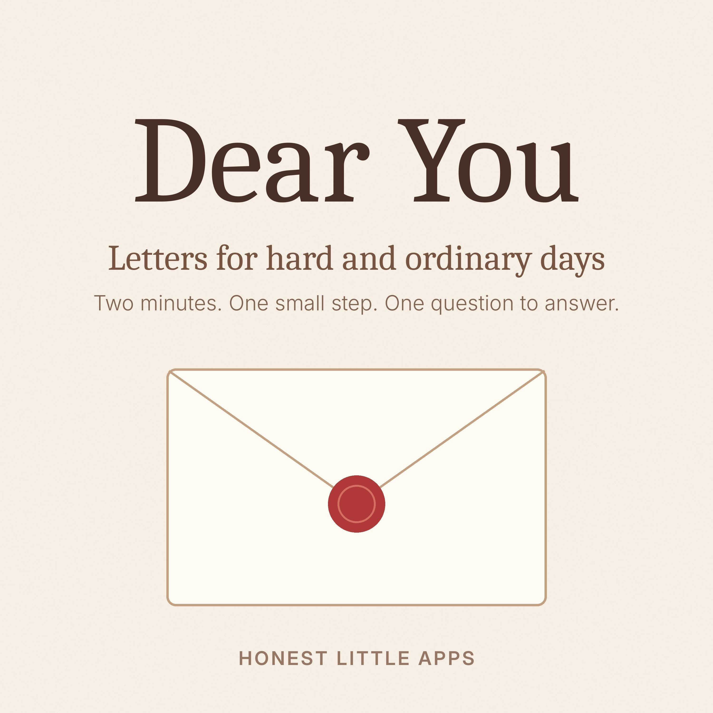
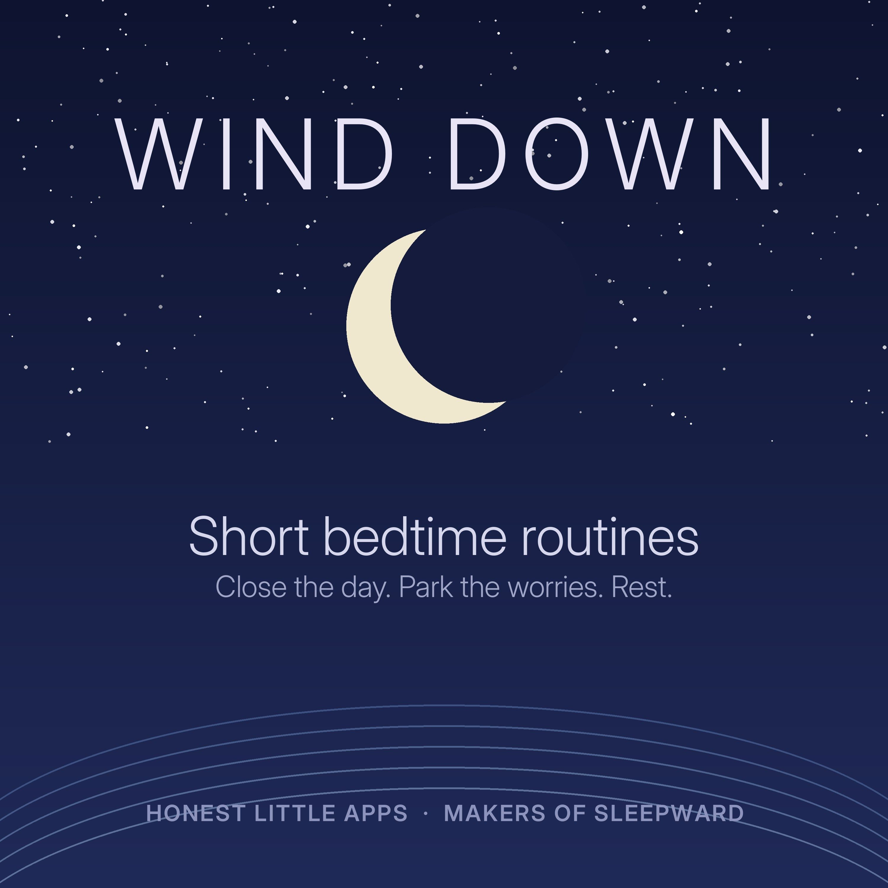
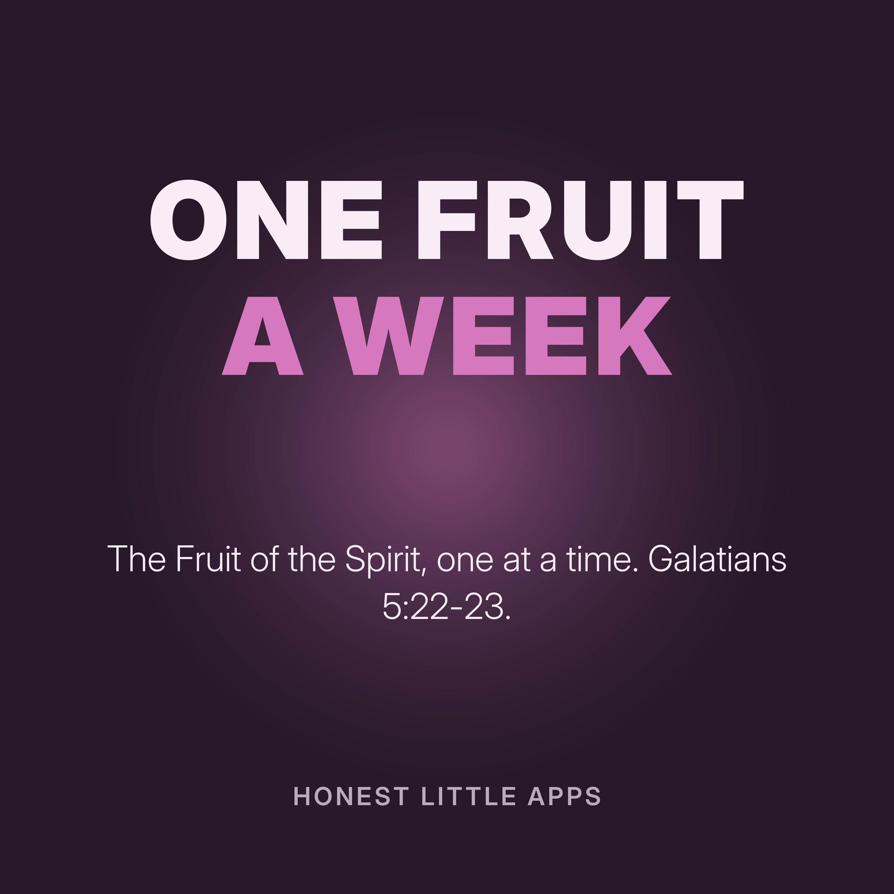
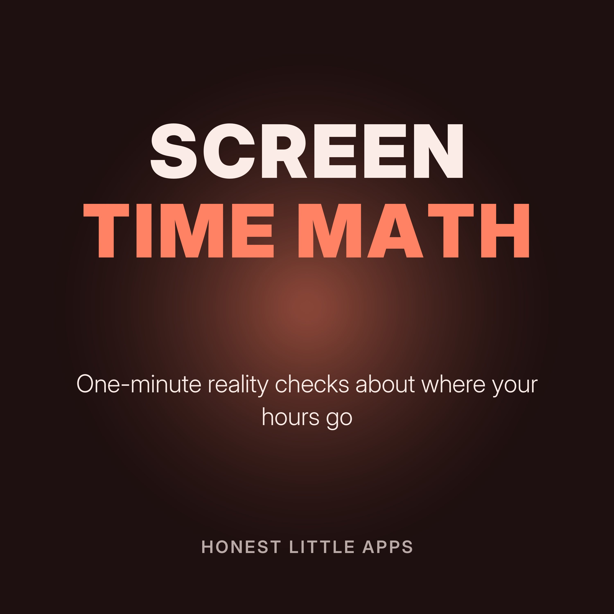
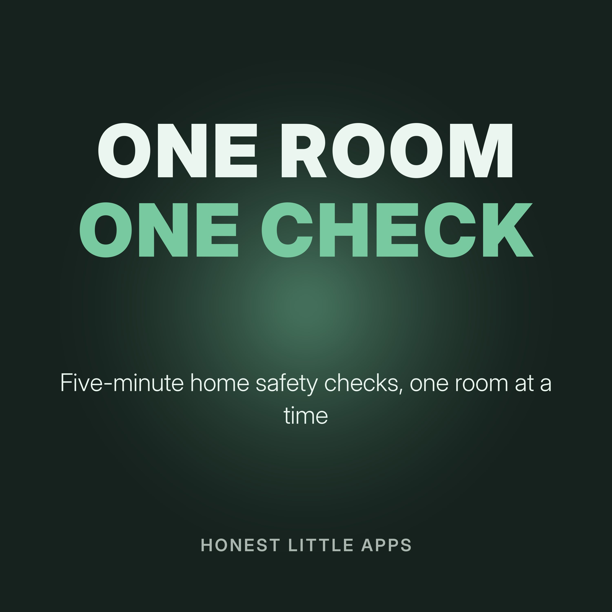

Free short podcasts
28 calm, narrated shows and 199 episodes from Honest Little Apps, most under five minutes. No ads in the middle; one small app mentioned at the end. Add a free audio player to your website · Share a show with your group.

Proverbs for Men: A Chapter a Day31 episodes · FORGED

Dear You: Letters for Hard and Ordinary Days14 episodes · Dear You

Wind Down: Short Bedtime Routines7 episodes · Sleepward

The 90-Second Craving Reset7 episodes · CraveBreaker

Before Your Menopause Appointment7 episodes · My Midlife Story

Say It Right: Two-Minute Repair for Couples7 episodes · UnFight

Tuesday Bible: Verses for Real Moments7 episodes · Lampstep

Ruth and Jonah, Chapter by Chapter8 episodes · Wayfold

One Fruit a Week: The Fruit of the Spirit9 episodes · Ninefruit
Sip Cues: Tiny Hydration Habits6 episodes · Dropkin

Sturdy Minutes: Strength Cues on GLP-16 episodes · Sturdy

Ready in Five: One Emergency-Prep Step at a Time6 episodes · Family Ready

Start Now: Tiny Pushes for Getting Started6 episodes · Now
Pause First: One Breath Before the Scroll6 episodes · FocusPass

Brain Sprint: Read-Along Maths for Kids7 episodes · Brainy Bucks

Three Clues: A History Mystery Minute5 episodes · PastRush
Second Date Questions5 episodes · SecondYes

Inside Out: One Body Fact a Day5 episodes · Body Unpacked

Keep or Cancel: A Subscription Check-In5 episodes · MoneyShield

Shift Check: Know Your Pay5 episodes · EarnCheck
Quick-Fire Bible Trivia5 episodes · Scrollway

Screen Time Math5 episodes · Time Debt

One Room, One Check5 episodes · RoomMend

Golden Hour Notes5 episodes · Asterfold

One-Minute Focus Reset5 episodes · Attention Age

Grove Stories: Cozy Bedtime Tales5 episodes · Puffgrove

Number Bond Rounds for Kids5 episodes · Number Beasts

Riddle Minute: Number and Logic Riddles5 episodes · Number Puzzles